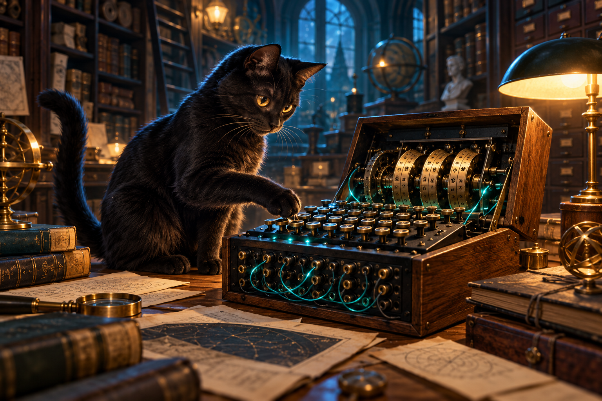

Розділ 01 · Шифри минулого
Місія 5.1 · Енігма
Машина зі змінним станом
Від ключового слова до роторів. Дослідіть шлях сигналу, налаштуйте перемички й прочитайте повідомлення Архіву часу.

1Відео і матеріали
Від Віженера до Енігми
Основна презентація — про Енігму. Історичні ручні та дискові шифри з другої презентації спробуємо в кейсах веббота.
2Практика
У Віженера зсув задає ключове слово. Тут після натискання рухаються ротори й змінюється підстановка. Однакова літера в різних позиціях може дати різні результати.
Шлях сигналу
Клавіша → панель перемичок → ротори справа наліво → відбивач → ротори назад → панель → лампочка. Спершу крокують ротори, потім проходить сигнал.
Картка налаштувань
Одержувачеві потрібні порядок роторів, кільця, початкові позиції, відбивач і перемички. Перед дешифруванням він відновлює початковий стан.
Перевіряйте гіпотези
Для цієї Енігми літера не перетворюється сама в себе. Це допомагає відкинути неможливу позицію слова, але ще не доводить правильність решти варіантів.
Відкрийте канал Архіву
- Залиште I–II–III, AAA, кільця AAA, без перемичок. Обробіть
AAAAAпо одному кроку: результатBDZGO. - Відновіть старт і обробіть
BDZGO. Чому повернулосяAAAAA? - Спробуйте
HELLOзі стартом AAA, потім AAB. Змініть лише цей параметр та збережіть обидва досліди. - Додайте перемички AB і CD. Порівняйте новий результат зі старим.
- Додатково: старт ADU, текст AAA. У журналі знайдіть подвійний крок середнього ротора.
Це модель трироторної Енігми I/M3 з роторами I–V, відбивачем B і прямою вхідною абеткою. Схема показує обраний шлях сигналу; усі 26 дротів одночасно не малюємо.
Дізнатися більше · люди, машини й перевірка джерел
Довоєнні польські дослідження та робота команд Блетчлі-Парку поєднали математику, перехоплення, інженерію й пошук помилок у правилах користування. Британська Bombe шукала сумісні налаштування, а не читала будь-який текст одним натисканням.
Національний музей обчислювальної техніки · Bombe · Crypto Museum · принцип роботи · Проводки роторів
У практиці використано повні налаштування і перевірені результати. Умовні кириличні приклади з матеріалів не є контрольними векторами історичної Енігми.
3Веббот
Остання зала шифрів минулого
Кейси Бофора, дисків і Плейфера, складання шляху сигналу, налаштування Енігми, перемички, подвійний крок і перевірка гіпотези. Ваші досліди та відповіді зберуться у звіт наприкінці.
Кожне перетягування можна виконати натисканнями або з клавіатури. Підказки й готові розв’язання позначаються у звіті; власні пояснення перевіряє викладач.
4Шифри в коді
Один ротор і зворотний шлях
Ці 8 рядків показують одну проводку ротора I за фіксованої позиції. Це частина принципу роботи, а не вся Енігма. Запуск і редагування — поруч; програмування не є умовою проходження місії.
Розгорнути короткий приклад
alphabet = "ABCDEFGHIJKLMNOPQRSTUVWXYZ"
wiring = "EKMFLGDQVZNTOWYHXUSPAIBRCJ"
letter, position = "A", 1
i = (alphabet.index(letter) + position) % 26
cipher = alphabet[(alphabet.index(wiring[i]) - position) % 26]
j = (alphabet.index(cipher) + position) % 26
back = alphabet[(wiring.index(alphabet[j]) - position) % 26]
print(letter, "→", cipher, "→", back)Запустіть і перевірте себе
- Результат:
A → J → A. - Змініть
positionз 1 на 0. Результат:A → E → A. Чому? - Замініть вхідну літеру та перевірте зворотний шлях.
Якщо незнайомі index(), остача % або змінні, рекомендуємо ознайомитися з поясненнями нижче.
Пояснення конструкцій Python
index() знаходить номер літери від 0 до 25; % 26 повертає номер у межі абетки; position змінює відносне положення контактів. Зворотний пошук використовує ту саму проводку.
Дізнатися більше · повна трироторна модель
Ті самі ротори, кільця, перемички та подвійний крок, що у практиці. Довший код можна вставити в Runner окремою кнопкою. Завантажити повний код .py
"""Навчальна реалізація трироторної Енігми I/M3, відбивач B.
Порядок роторів, старт і кільця задаються зліва направо.
Історичні параметри: https://enigmamuseum.com/rotwirg.htm
"""
ABC = "ABCDEFGHIJKLMNOPQRSTUVWXYZ"
ROTORS = {
"I": ("EKMFLGDQVZNTOWYHXUSPAIBRCJ", "Q"),
"II": ("AJDKSIRUXBLHWTMCQGZNPYFVOE", "E"),
"III": ("BDFHJLCPRTXVZNYEIWGAKMUSQO", "V"),
"IV": ("ESOVPZJAYQUIRHXLNFTGKDCMWB", "J"),
"V": ("VZBRGITYUPSDNHLXAWMJQOFECK", "Z"),
}
REFLECTOR = "YRUHQSLDPXNGOKMIEBFZCWVJAT"
def enigma(text, start="AAA", rings="AAA", plugs="",
order=("I", "II", "III")):
text = text.upper()
if any(c not in ABC for c in text):
raise ValueError("Введіть лише латиницю A–Z без пробілів")
if (len(start) != 3 or len(rings) != 3
or any(c not in ABC for c in start + rings)):
raise ValueError("Старт і кільця: три літери A–Z")
if len(order) != 3 or len(set(order)) != 3 or any(r not in ROTORS for r in order):
raise ValueError("Потрібні три різні ротори I–V")
pairs = plugs.upper().split()
joined = "".join(pairs)
if (len(pairs) > 10 or any(len(p) != 2 for p in pairs)
or any(c not in ABC for c in joined)
or len(set(joined)) != len(joined)):
raise ValueError("Перемички: до 10 неперетинних пар, наприклад AB CD")
panel = dict(zip(ABC, ABC))
for a, b in pairs:
panel[a], panel[b] = b, a
pos = [ABC.index(c) for c in start]
ring = [ABC.index(c) for c in rings]
result = ""
for letter in text:
middle = ABC[pos[1]] == ROTORS[order[1]][1]
right = ABC[pos[2]] == ROTORS[order[2]][1]
if middle:
pos[0] = (pos[0] + 1) % 26
if middle or right:
pos[1] = (pos[1] + 1) % 26
pos[2] = (pos[2] + 1) % 26
n = ABC.index(panel[letter])
for i in (2, 1, 0):
wiring = ROTORS[order[i]][0]
offset = pos[i] - ring[i]
n = (ABC.index(wiring[(n + offset) % 26]) - offset) % 26
n = ABC.index(REFLECTOR[n])
for i in (0, 1, 2):
wiring = ROTORS[order[i]][0]
offset = pos[i] - ring[i]
n = (wiring.index(ABC[(n + offset) % 26]) - offset) % 26
result += panel[ABC[n]]
return result
message = "HELLOWORLD"
cipher = enigma(message)
print("Шифр:", cipher)
print("Назад:", enigma(cipher))
Якщо використовуєте input()
Натисніть «Запустити».
Перший запуск завантажує Python, тому потрібен інтернет. Короткий приклад і повна модель не потребують додаткових пакетів. Історичні шифри використовуємо для навчання.
5Зворотний зв’язок
Енігма · від теорії до перемоги
Збережіть PDF після проходження веббота й пройдіть тест. Надана Google-форма приймає відповіді на запитання; PDF передайте викладачу погодженим способом, якщо у формі не додано поле завантаження файла.